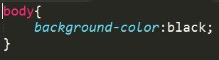

Tu hoja de estilos en un SASS por tres
Andrés Bedoya Tobón
and1res@hotmail.com
Sass (CSS with superpowers)
"The idea is that duplicating code can cause failure and confusion for developers. It’s common sense as well: write commonly-repeated patterns once, and reuse those bits throughout the application. It’s more efficient and far easier to maintain code this way."
- Dan Cederholm
Agenda
- Introducción a HTML
- Introducción CSS
- Flujo de trabajo SASS
- Generalidades
- Síntaxis básica
- Ejemplos
- Recomendaciones
Introducción a HTML
Es el código que define la ubicación, el tipo y la jerarquía del contenido en el documento html. Es la obra negra del proyecto que se va a construír.
Gráficamente el HTML
Introducción CSS
Una hoja de estilos es una capa que se pone encima de la estructura del documento conocido como código html y permite definir las reglas gráficas que el navegador va a usar para diagramar la interfaz de usuario.
Introducción CSS
Introducción CSS
La hoja de estilos contiene el conjunto de reglas gráficas que serán aplicadas a los elementos html, son reglas estáticas que son interpretadas por el navegador mientras el documento carga.
Introducción CSS
El estandar para definir reglas gráficas a evolucionado a través de los años, teniendo dos versiones importantes: CSS 2.1 y actualmente con el estandar html5 aparece CSS3
Ventajas CSS
- Independencia de capas
- Render rápido
- Reglas intuítivas
- Cambio de look rápido, si hay independencia
- Herramientas para edición en caliente
Desventajas CSS
- Reglas interpretadas
- Díficil detectar errores
- Repetición y posible duplicación de reglas
- No hay una única forma de incluír estilos en un documento html
- Compatibilidad entre navegadores, reglas no soportadas
Flujo de trabajo SASS
- ¿Qué es un flujo de trabajo?
- ¿Cómo funciona Sass?
- Instalación
- Herramientas en línea
¿Qué es un flujo de trabajo?
Es el conjunto de pasos y herramientas empleados para desarrollar un proyecto. SASS aparece como una herramienta que se incluye en el proceso de creación de un documento html, para procurar que el código sea legible, mantenible y testeable.
¿Cómo funciona SASS?
Las hojas de estilos han evolucionado bastante en los últimos años, principalmente se han optimizado las operaciones de render de las reglas gráficas del documento. Las mejoras que ha tenido el css, van desde las interacciones sencillas como cambiar el borde de un contenedor, hasta animación de propiedades como el cambio de escala, rotación, opacidad, etc. Y manipulación de las diferentes características que tienen los elementos html.
¿Cómo funciona SASS?
Implementar algunas de las nuevas funcionalidades del estandar CSS3 tales como: Degradados, animaciones, prefijos, etc. En la escritura de código CSS evidencia una dificultad para ser interpretada por el cortador (persona que adpta el diseño gráfico a un documento html). Porque hay que saber por ejemplo, como se representa el color en el documento y sus diferentes variaciones permitidas en una hoja de estilos.
¿Cómo funciona SASS?
Con SASS la creación de una hoja de estilos, es similar a un proceso de desarrollo de software, escribimos un código "fuente" (El .scss o .sass dependiendo de la sintáxis que se quiera usar), luego se "compila", usando las herramientas de sass y por último obtenemos el archivo "ejecutable" (El CSS, el único que entiende el navegador).
¿Cómo funciona SASS?
Para poder usar SASS, se debe instalar primero una serie de herramientas que se encarguen de precompilar el código intermedio scss y convertirlo en una salida en formato CSS. Incluso esta herramienta nos permite validar sintaxis y evitar errores en el proceso de construcción de las hojas de estilos.
Instalación - SASS
SASS funciona como un módulo (gema) de ruby, una gema es un paquete que se descarga y se ejecuta usando ruby, antes de usar gemas, es necesario descargar e instalar ruby en el sistema operativo. Se recomienda seguir el proceso de instalación sugerido en la página. Una vez que queda instalada la herramienta, se puede usar el comando gem en la consola del sistema operativo para descargar e instalar SASS.
Instalación - SASS
Mientras se estudia SASS vamos a tener preguntas o problemas, podemos preguntarle a la comunidad que se caracteriza por su actividad evangelizadora y el constante desarrollo de la herramienta.
Instalación - SASS
Principales pasos para realizar un correcto montaje del ambiente de desarrollo.

Instalación - Sass
Verificamos finalmente.
Instalación - Sass
Ejemplo "hola mundo" para probar la configuración de la herramienta
Código scss
Código css
Resultado
Herramientas en línea
El proceso de instalación anteriormente visto, considera windows como sistema operativo, pero también es posible instalar SASS en OSX (Apple) y otros sistemas operativos.
Herramientas en línea
Si no disponemos de permisos de administrador para instalar las herramientas en el S.O, se puede optar por usar herramientas en línea. ¿Quién no tiene acceso a un navegador web?
Herramientas en línea
La herramienta oficial de sass
SASS meister
Herramientas en línea
Herramienta de desarrollo online, ofrece SASS como preprocesador.
Code Pen
Generalidades - SASS
- SASS es un beneficio si hay bases en CSS, sino aprenda primero lo básico
- ¿Cómo trabajo inteligentemente, no solo, duramente?
- Hacer énfasis en los roles de creación de páginas
Generalidades - SASS
- Nace en la comunidad de ruby
- Se sigue escribiendo CSS estático
- Desarrolladores no veían las ventajas de usar un framework para crear contenido dinámico en páginas web
Generalidades - SASS
- En 2010 aparece SASS y la idea de preprocesar CSS
- Otros proyectos con visión similar emergen
- Con SASS se automatizan partes del proceso de construcción de estilos
Generalidades - SASS
- Permite realizar control de versiones de los estilos, las imágenes, fuentes tipográficas y otros insumos del proyecto a tráves del ciclo de vida
- Facilita la escritura de estilos dinámicos
- Evita la repetición (DRY - Don't repeat yourself) - variables, nesting, extends, mixins
Generalidades - SASS
- Mejores estilos con menos esfuerzo
- Lo libera de ser repetitivo y le da herramientas para ser creativo
- Hacer cambios rápidos permite tomar riesgos en el diseño
Generalidades - SASS
- Menos software de diseño más hojas de estilos
- Mientras el proyecto avanza, organizar los estilos es un desafío sobretodo si se trabaja en equipo
- Si usted es diseñador, seguramente ya uso variables al utilizar palabras claves como blue, block, serif
Síntaxis básica - SASS
- Variables
- Operadores
- Estructuras de control
- Nesting
- Partials
- Mixin
Variables - SASS
Es un contenedor, que almacena un valor es decir cualquier combinación de datos que pueda asignarse a una propiedad CSS, incluídos múltiples valores separados por coma.
Variables - SASS
- El nombre deben ser nemotécnico
- El nombre no muy largo
- Mínuscula (Case sensitive)
Variables - SASS
El nombre de la variable en mayúscula sostenida, es diferente a la misma palabra en mínuscula. Observe como solo se procesa el valor que se usa $color, pero las dos variables son "correctas".
Operadores - SASS
Realizar operaciones matemáticas en SASS es muy sencillo, SASS soporta los principales operadores aritméticos +, -, *, / y % (Módulo). Además reconoce únidades.
Estructuras de control - SASS
Las estructuras de control permiten tomar decisiones mientras se preprocesa la hoja de estilo con base en condiciones. Una condición es una expresión que al evaluarse su resultado solo puede ser verdadero o falso.
Si - entonces (if - else)Estructuras de control - SASS
Otro tipo de estructura muy útil son los ciclos, que permiten realizar operaciones repetitivas sobre un grupo de elementos.
Ciclo para (for)Estructuras de control - SASS
Hay otras estructuras muy útiles, estan por ejemplo los @each, similar al ciclo for y los ciclos @while, que se ejecutan mientras que una condición sea verdadera. Para mayor información, visita la documentación oficial.
Documentación estructuras de controlNesting - SASS
Posibilita ver las reglas de estilos como propiedades anidadas, facilitando una relación entre las reglas, conceptualmente hablando.
Partial - SASS
SASS permite dividir una hoja de estilo, que por lo general son bastante largas en varias partes parciales, de tal modo que representen diferentes secciones dentro del documento y posibiliten ver el look (todo) a partir de sus partes.
Pasos:- Crear un archivo por cada sección
- Poner un underline al principio del nombre
- Crear un archivo principal que se encargue de unir las partes
Partial - SASS
- El archivo donde se unen las partes no lleva underline, para evitar que sea ignorado
- Se importan las partes así @import "nombre_parte"
- Se importa la parte sin usar underline
Partial - SASS
El orden de importación es clave, para general el archivo final que une las partes, en el siguiente ejemplo vemos la diferencia de archivo procesado final.
Ejemplos - SASS
Play with this gist on SassMeister.
Código en githubEjemplos - SASS
Play with this gist on SassMeister.
Código en githubEjemplos - SASS
Recomendaciones
SASS es un accesorio muy útil en el proceso de desarrollo de un documento html, al principio puede tomar tiempo entender como funciona y escribir los primeros estilos. Pero a medida que se empieza a incorporar en diferentes proyectos va a empezar a ser una herramienta indispensable.
Recomendaciones
- SASS es el principio para automatizar funciones
- Compass es el siguiente paso
- Grunt JS Tareas extras, minificar, optimizar, documentar...
Recomendaciones
- El trabajo en paralelo con partials y el control de cambios se vuelve muy fácil
- Ayuda tener buenas prácticas de desarrollo en un equipo de trabajo, que puede incluir a diseñadores gráficos en el proceso
- Se puede reciclar código entre proyectos
Cheat-sheets - SASS
Los cheat-sheets son imágenes u hojitas de referencia rápida muy útiles para recordar la sintáxis de las principales instrucciones de SASS.
SASS cheat-sheetsOtras herramientas similares
Estas herramientas son proyectos por lo general de código abierto, se consideran complementos en la creación de estilos para documentos html, porque agilizan el proceso de construcción, pero no es indispensable su uso para que un documento html tenga reglas gráficas.